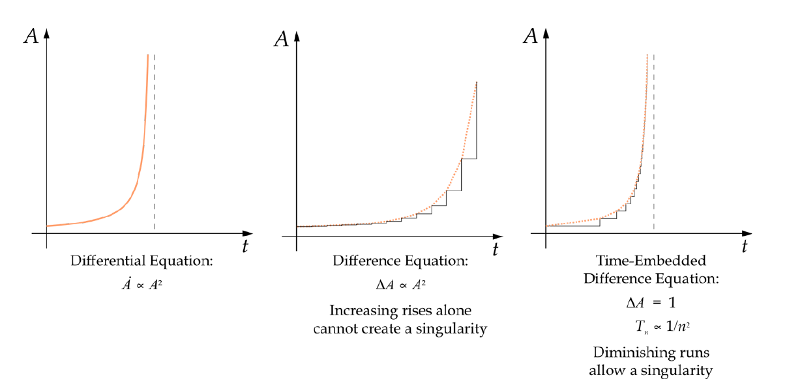
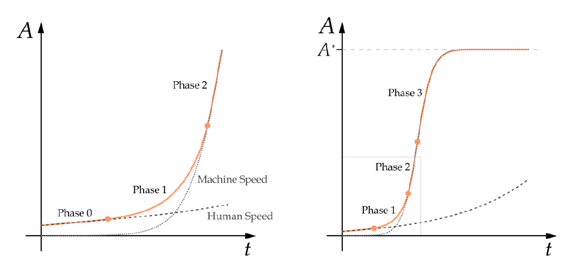

The Dynamics of Intelligence Explosions: What Actually Produces a Singularity
TL;DR
- "The Dynamics of Intelligence Explosions" (arXiv 2608.14426, v1 14 Aug 2026, v2 25 Aug 2026; Toby Ord, Oxford Martin AI Governance Initiative) asks a narrow question with wide consequences: given that AI is increasingly used to build AI, what must be true of the feedback loop for capability to reach a vertical asymptote — infinite in finite time — rather than merely rising very fast?
- The answer separates two things the economics-inspired RSI literature runs together. Super-exponential growth needs the returns to improvement to be super-linear. A finite-time singularity needs strictly more: the duration of one trip around the feedback loop — Ord's generation time — must fall towards zero fast enough that infinitely many trips fit into a finite interval. Fix the loop duration at any positive number and no rate of per-loop improvement, however violent, produces a singularity.
- Hence a reclassification. In the standard model \(\dot A = kA^r\) super-exponential and singular are the same thing; in Ord's discrete model they come apart, and super-exponential-but-not-singular becomes the default rather than a knife-edge curiosity. Rising growth rates — 10%, then 20%, then 30% a month — are not the signature of an approaching singularity. And because both conditions are global properties of the whole trajectory, no finite window of measurement can confirm or rule one out.
Why this matters
This tracker is full of papers that build a loop and then ask whether it compounds. AIDE² ran an outer agent rewriting an inner agent for 100 unattended steps and claimed "Level 1" self-improvement while declining to claim ignition. Hyperagents ran the compounding test that matters — does a run go further when it starts from improvers that already evolved elsewhere? — and came back with 0.640 versus 0.610, not significant. Rethinking Harness Evolution found evolved harnesses gaining +0.6 on average on held-out tasks.
Ord's paper is the theory that says what those experiments would have to see, and two results land directly on them. First: improvement per iteration — the thing every one of them measures — is the wrong knob if the question is explosive growth. What governs the shape is how fast each iteration finishes, and none of these papers reports it. Second, and harder: the conditions for explosive growth are global, so a finite run cannot settle the question either way. That is not a complaint about sample sizes; the quantity of interest is not identified by any bounded observation. If you have been waiting for a decisive RSI experiment, this paper explains why one is not coming.
The core idea
Let \(A\) be some scalar measure of AI capability and \(\dot A\) its rate of change per unit time. The workhorse equation of the recent RSI literature is
where \(A\) is the current capability level, \(\dot A\) is how fast it is rising, \(k>0\) is a constant scaling factor, and \(r\) is the returns exponent setting how the rate responds to the level. At \(r=1\) this is exponential; below 1, sub-exponential; above 1, the solution is a hyperbola reaching infinity at a finite time \(t^{*}\) — a mathematical singularity.
Recent RSI models get \(r>1\) out of a theory designed to prevent it — Jones's semi-endogenous growth theory, in which ideas get harder to find:
Here \(L\) is research labour, \(\delta\) output per researcher, \(\lambda \le 1\) the stepping-on-toes exponent (doubling researchers less than doubles output), and \(\beta>0\) the fishing-out exponent (later ideas are harder). With \(L\) fixed this cannot sustain even exponential growth. The RSI move — Ord credits Davidson et al. (2026), and the same trick to Solomonoff (1985) and Moravec (1999, 2003) — lets \(A\) measure computational efficiency, so AI labour is compute \(C\) times efficiency:
Hold \(C\) roughly constant and this is the first equation with \(r = 1+\lambda-\beta\), which can exceed 1: the singularity is back on the table inside the framework built to exclude it. (Ord notes this is not an intelligence explosion at all but an efficiency — really a labour — explosion, and so a lower bound.) His two contributions both attack the form of that first equation: generalise it and super-exponential growth stops implying a singularity; discretise it and the singularity nearly disappears.
How it works
The loop in one sentence. A singularity means the gradient of the capability curve goes to infinity in finite time, and a gradient is rise over run — so there are exactly two ways to get one: make each step's rise enormous, or make each step's run shrink to nothing. Everything else is detail about which of those two actually works.
Once the loop is treated as discrete: only the second one.

Figure 1 from the paper. Same feedback rule, three modelling choices. The middle panel is the central negative result: with a fixed loop duration, no growth rate produces a singularity. The right panel is the positive one: with shrinking loop durations, an improvement of exactly one per loop suffices.
One growth curve, start to finish
The paper's own pair of examples, worked as a single comparison. Two hypothetical AI R&D loops; two questions each; then we move one number across its threshold and watch the verdict flip.
Step 1 — Ask how long each trip around the loop takes. Loop A finishes its first trip in one time unit, its second in half a unit, its third in a third: the n-th trip takes one divided by the round number. Loop B is barely faster — the n-th trip takes one over the round number raised to the power 1.01. After a hundred rounds these are almost indistinguishable: 0.01 versus roughly 0.0095.
Step 2 — Ask how much better the system gets on each trip. Loop A is spectacular: each trip multiplies capability by two raised to the power of the current capability, a tower of exponentials — the fastest growth in this paper outside the singular cases. Loop B is pathetic and getting worse: on the n-th trip it adds one over the round number, so round ten adds a tenth and round a thousand adds a thousandth.
Step 3 — Add up all the trip durations. Do they total a finite number? Loop A's durations are the harmonic series — one plus a half plus a third plus a quarter — which grows without bound: a million trips take about fourteen time units, and there is no moment by which infinitely many are done. Loop B's converge to a finite total, because raising the round number to any power above one is enough. Loop B fits infinitely many trips into a bounded stretch of time.
Step 4 — Add up all the improvements. Do they total infinity? Loop A: obviously yes. Loop B: also yes, and that is the point — one plus a half plus a third diverges, so those shrinking increments still reach unbounded capability, just very slowly.
Step 5 — Read off the verdict.
| Trip durations shrink as… | Improvement per trip | Infinitely many trips in finite time? | Capability unbounded? | Singularity | |
|---|---|---|---|---|---|
| Loop A | one over the round number | multiply by a tower of exponentials | No | Yes | No |
| Loop B | one over the round number to the 1.01 | add one over the round number | Yes | Yes | Yes |
Loop A is the more impressive machine by an almost unimaginable margin, and it never reaches a vertical asymptote. Loop B improves by amounts trending to zero, and it does.
Step 6 — Now move one number across its threshold. Take Loop A and change nothing except the exponent on the trip durations: from one over the round number to one over the round number to the 1.01 — the nudge that distinguishes Loop B. The improvement per trip stays a tower of exponentials. The verdict flips to "singularity", purely because the durations now sum to something finite. Move it back and it flips again. That exponent, on a quantity nobody in the RSI literature measures, is the whole switch.
Two lessons: the timing threshold is sharp — a hundredth of a point decides it — and the improvement threshold is low, since capability need only grow without bound, however slowly.
The machinery behind steps 3–5
Why the continuous model hides this. Write the general autonomous form \(\dot A = f(A)\), where \(A\) is capability, \(\dot A\) its time derivative, and \(f\) an arbitrary function mapping the current level to the current rate. Super-exponential growth requires the relative growth rate \(f(A)/A\) to exceed every constant — i.e. \(f\) super-linear in the limit — plus a positivity condition, \(f(A)>0\) everywhere on \([A_0,\infty)\) with \(A_0\) the starting level, so the trajectory rises and never divides by zero.
Singularity is a different question with a one-line derivation. The time to climb a small height is that height divided by the slope there, so the total time to climb from the start to infinity is
where \(A_0\) is initial capability, \(f(A)\) the growth rate at level \(A\), and \(t^{*}\) the arrival time at infinity. When this integral converges, capability passes every finite level before \(t^{*}\): a singularity. Ord calls that the blow-up condition — a global property of \(f\), since weak growth in one region can be offset by ferocious growth elsewhere, which is why convexity (a local property) is neither necessary nor sufficient.
The gap this opens. Under the power law \(f(A)=kA^{r}\), super-linear implies blow-up: the thresholds coincide, which is why the economics literature treats super-exponential and hyperbolic as synonyms. Drop the restriction and they separate:
with \(A_0\) the starting capability and \(t\) time. Here \(A\log(A)\) is super-linear, so growth is super-exponential — doubly exponential, in fact — but the integral of its reciprocal diverges, so there is no singularity. Same for \(A\log(A)\log(\log(A))\), which gives triply exponential growth, and every further term in that family; raise the last factor to any power above one and blow-up is met after all. Kurzweil had independently proposed \(A\log(A)\) for exactly this reason.
The discrete correction. Real RSI loops are not continuous: a chip generation, a pretraining run, a scaffold edit each take time. Write \(A_n\) for capability after \(n\) trips and \(\Delta A_n = A_{n+1}-A_n\) for the gain on trip \(n\). In a pure difference equation \(A_{n+1}=A_n+f(A_n)\), singularities are flatly impossible — only finitely many steps precede any index, each adding a finite amount. Feed it \(f(A)=A^2\), hyperbolic in continuous time, and you get double-exponential growth with no asymptote; \(f(A)=e^{A}\) gives tetration, still no asymptote. So Ord builds a hybrid, the time-embedded difference equation: a difference equation for capability plus a second sequence for the clock. With \(t_n\) the time trip \(n\) completes,
where \(T_n\) is the generation time — the wall-clock duration of the n-th trip round the loop, named by analogy with population growth, epidemics and nuclear chain reactions — and \(t_\infty\) is the time by which infinitely many trips have completed. Capability over time is \(A(t)=A_{n_t}\), with \(n_t\) the trips completed by time \(t\). Hence the central theorem, stated exactly:
The first conjunct is the Zeno condition on generation time (infinitely many steps in finite time); the second the boundlessness condition on capability (the gains, however small, still sum to infinity). Ord's proof is two sentences: neither helps alone, and together they force capability past every finite level before \(t_\infty\). The thresholds are independent and binary — over-performance on one cannot cover a deficiency in the other, exactly as Loops A and B showed. Note where the burden moved: the demanding threshold has migrated from the returns \(f(A)\) to the clock \(T_n\), and the cutoff for how fast \(T_n\) must shrink is the same threshold, \(n\log(n)\log(\log(n))\dots\), that \(f(A)\) had to beat before.
One measurement trap. Track generation time, not the more convenient doubling time \(D_n = T_n / \log_2(A_n/A_{n-1})\), where \(D_n\) is the time to double at step \(n\), \(T_n\) the generation time, and \(A_n/A_{n-1}\) the multiplicative gain on that step. Doubling time blends duration with impact, so a fixed-duration loop with doubly-exponential gains drives \(D_n\) to zero while remaining provably non-singular.
What a real explosion would look like instead
Put a floor under generation time while each loop still multiplies capability by a constant factor and the trajectory converges to an exponential, not an asymptote. Ord's four phases: (0) human-speed exponential; (1) RSI drives generation time towards machine speeds so the growth rate climbs — super-exponential in shape; (2) generation time hits its floor and the curve settles into a much faster exponential; (3) capability saturates and the whole thing is revealed as a logistic.

Figure 3 from the paper. Two distinct finite limits bite in sequence: first a floor on generation time (ending the super-exponential phase), then a ceiling on capability (ending growth). Super-exponential models fit phase 1 well and phase 2 badly.
His reason for expecting the floor: RSI loops span decades (a successor to EUV lithography) to months (better pretraining) to seconds (better scaffolds), and the short ones cover only a sliver of the pipeline — "putting a fixed agent in a scaffold that has the agent repeatedly redesign that very scaffold might make some improvements, but without changing the model itself, it seems very unlikely to take off towards infinity."
# Time-embedded difference equation: the model, and the two tests
A[0] <- A0 # starting capability, on some chosen measure
t[0] <- 0
for n = 1, 2, 3, ...:
T[n] <- duration of trip n around the R&D loop # the neglected parameter
t[n] <- t[n-1] + T[n] # clock advances by that much
dA[n] <- capability gained on trip n # = f(A[n-1]) in the autonomous case
A[n] <- A[n-1] + dA[n]
A(t) <- A[n_t] # n_t = trips completed by time t
# Verdict (Singularity Theorem):
zeno <- converges(sum of T[n]) # infinitely many trips in finite time?
boundless <- diverges(sum of dA[n]) # capability exceeds every finite level?
singular <- zeno AND boundless # both binary; neither compensates the other
# Two corollaries that decide the empirical questions:
if T[n] >= T_min > 0 for all n: singular = False # any floor on loop duration kills it
if T[n] constant: singular = False # regardless of how fast dA[n] grows
The caveats Ord builds in himself
Four, all load-bearing. (i) Nobody, Ord included, thinks capability literally reaches infinity; these models are expected to stop fitting before \(t^{*}\), as exponentials are really the early arm of an S-curve. The claim is only that hyperbolic growth may fit a useful stretch. (ii) The classification is asymptotic and reality may break it at finite \(t\) or finite \(A\); he hopes, but cannot guarantee, that distinctions natural in the idealised setting stay natural in application. (iii) Super-exponentiality depends heavily on whether you plot a quantity or its log; singularity is invariant across "similar" measures — but when measures are not similar, one saturating while the other diverges, the choice decides everything. (iv) Borrowing physics' distinction between coordinate and essential singularities, some measures blow up harmlessly: mean time between failures going to infinity just means reliability hitting 100%. He singles out the METR time horizon as "probably not the right tool for the job", since it can diverge without dragging other capability measures along.
Results
A theory paper; its results are a classification and a theorem.
- The four-regime classification. Under \(\dot A = kA^{r}\), all super-exponential growth is singular. Under general \(\dot A = f(A)\), a narrow band of super-exponential-but-not-singular growth opens up. Under plain difference equations, all super-exponential growth is sub-singular. Under time-embedded difference equations both varieties return, but singular growth now requires generation time to shrink towards zero — and "super-exponential growth without a singularity is no longer a curiosity — it is the default."
- The growth table (Appendix, Table 1), transcribed, showing where the boundary sits in the continuous model:
| \(f(A)\) | \(A(t)\) | Singularity? |
|---|---|---|
| \(A^{0.999}\) | \(\sim t^{1000}\) | No |
| \(A\) | \(\sim e^{t}\) | No |
| \(A\log(A)\) | \(\sim e^{e^{t}}\) | No |
| \(A\log(A)\log(\log(A))\) | \(\sim e^{e^{e^{t}}}\) | No |
| \(A(\log A)^{2}\) | \(\sim e^{1/(t^{*}-t)}\) | Yes |
| \(A^{2}\) | \(\sim 1/(t^{*}-t)\) | Yes |
| \(e^{A}\) | \(\sim -\log(t^{*}-t)\) | Yes |
Two oddities Ord flags: \(A(\log A)^2\) grows faster than any hyperbola yet is less "explosive" (growth is not packed into the final instant), while \(e^{A}\) lags every hyperbola then catches up all at once. Hence his broader term singular growth for everything with an asymptote, hyperbolic or not.
- Two negative results for measurement. You cannot confirm or rule out an explosion from returns over a finite period, because blow-up, Zeno and boundlessness are all global; local elasticity above 1 is evidence, but limited. And behaviour near the boundary is exquisitely sensitive while capability measurements are rough and noisy — a problem "for companies setting their internal evaluations and for the prospects of regulation." Hence his one policy suggestion: require frontier labs to report current generation times, "especially those for pre-training and for RLVR post-training."
- The reassurance is bounded. Even a purely linear speed-up is dangerous: if RSI turns \(A(t)\) into \(A(10t)\), we get a decade of progress per year with no change in the curve's shape at all.
How it connects
- AIDE² / RSI evidence — the cleanest empirical Level-1 claim in this tracker, and the one Ord re-reads most sharply. Weco's headline is improvement per outer step (7 improved versions in 100 steps, 8 days), which speaks to the boundlessness condition — the easy one. What would decide anything about explosiveness is how the wall-clock cost per outer step trends, and that is never reported. Weco's own refusal to claim ignition — installing the evolved agent as the outer agent converged ~2× faster but to the same ceiling — is in Ord's vocabulary a generation-time speed-up under a capability ceiling: phase 1 straight into phase 3, no phase 2.
- Hyperagents — the compounding test that came back inconclusive (0.640 vs 0.610, five runs, heavy-tailed). Ord supplies the theoretical reason that verdict was always likely, and reframes "inconclusive": a system can pass every compounding test you can afford and still be provably non-singular if its loop duration has a floor.
- Darwin Gödel Machine and Mendel Gödel Machine — the archive-and-self-edit thread, and a clean case of the rise-versus-run split. MGM's entire contribution raises the rise per self-edit (better evidence, same budget: +10.0pp on SWE-bench Verified-60) with expansions held fixed. Under fixed generation time that is unambiguously valuable and unambiguously non-singular; nothing in this lineage attacks the run.
- Recursive Harness Self-Improvement — where Ord's scaffold remark lands directly: prompt-level harness refinement with a fixed external optimizer, converging in one to two iterations. His prediction for exactly this setup is that scaffold-only loops have the shortest generation times and the smallest slice of the pipeline, so they saturate fast.
- Rethinking Harness Evolution — the empirical mirror of the negative measurement result: finite-window gains from harness evolution mostly fail to generalise (+0.6 average held-out), while Ord shows even clean generalising gains would not settle the shape question.
Critical take
The mathematics is elementary and correct, and that is a feature: the Singularity Theorem is two convergence tests and a two-sentence proof, which is why it is hard to argue with. The reframing is genuinely useful — "increasing growth rates are not the signature of singular growth" belongs above the desk of anyone reading takeoff forecasts.
But much of the force comes from a modelling choice rather than a discovery. Difference equations cannot produce singularities by construction: finitely many finite additions cannot diverge. Once you accept that RSI is discrete the impossibility result is immediate, and everything interesting is smuggled into the one place continuity survives — the clock. Ord is transparent about this and offers delayed differential equations as an equivalent continuous route, but the headline is closer to "singularities require a Zeno process" than to a new fact about intelligence.
The generation-time floor, which does most of the practical work, is asserted rather than derived: it seems "highly unlikely" that loop durations reach zero, illustrated with lithography and pretraining timescales. Plausible and completely informal — no model of what sets the floor, no estimate of where it is, and no treatment of the obvious complication that an explosion could migrate between loops, exhausting scaffold edits and moving into pretraining changes and then hardware. A system that switches to progressively shorter loops is not described by a single sequence of generation times, and it is the scenario the labs actually describe.
The measurement pessimism also cuts deeper than the paper admits: if no finite observation identifies the conditions, "report your generation times" is one input to a test just proved unavailable — useful for judging phase 1 versus phase 2, not diagnostic. And \(A\) is undefined throughout. The invariance claim holds only across "similar" measures, and the most interesting real cases — efficiency or effective compute versus general capability — are exactly the ones he shows are not similar: the theorem is robust to how you measure right up to the point where measurement matters most. What survives is one clean transferable idea: for feedback loops the run matters more than the rise, and almost nobody measures the run.
If you remember three things
- Two thresholds, not one. Super-exponential growth needs super-linear returns; a finite-time singularity needs strictly more — the blow-up condition, that \(\int_{A_0}^{\infty} dA/f(A)\) converges. Under \(\dot A = kA^{r}\) these coincide, which is why the literature conflates them; in general they do not, and \(\dot A = A\log(A)\) gives doubly exponential growth with no asymptote at all.
- The clock is the switch. Treat the loop as discrete and the theorem is exact: a singularity exists iff the generation times sum to something finite and the capability gains sum to infinity. Fix the loop duration and nothing else saves you; shrink it fast enough and adding one per loop suffices. Any floor on generation time — Ord thinks one near-certain — turns asymptote into exponential into logistic.
- A finite run cannot settle it. Both conditions are global properties of an infinite trajectory, so no bounded window confirms or refutes an explosion, and the borderline is razor-thin against noisy metrics. Which is why every compounding experiment in this tracker comes back inconclusive — and why the reassurance is limited, since a mere tenfold linear speed-up delivers a decade of progress per year with the curve's shape unchanged.